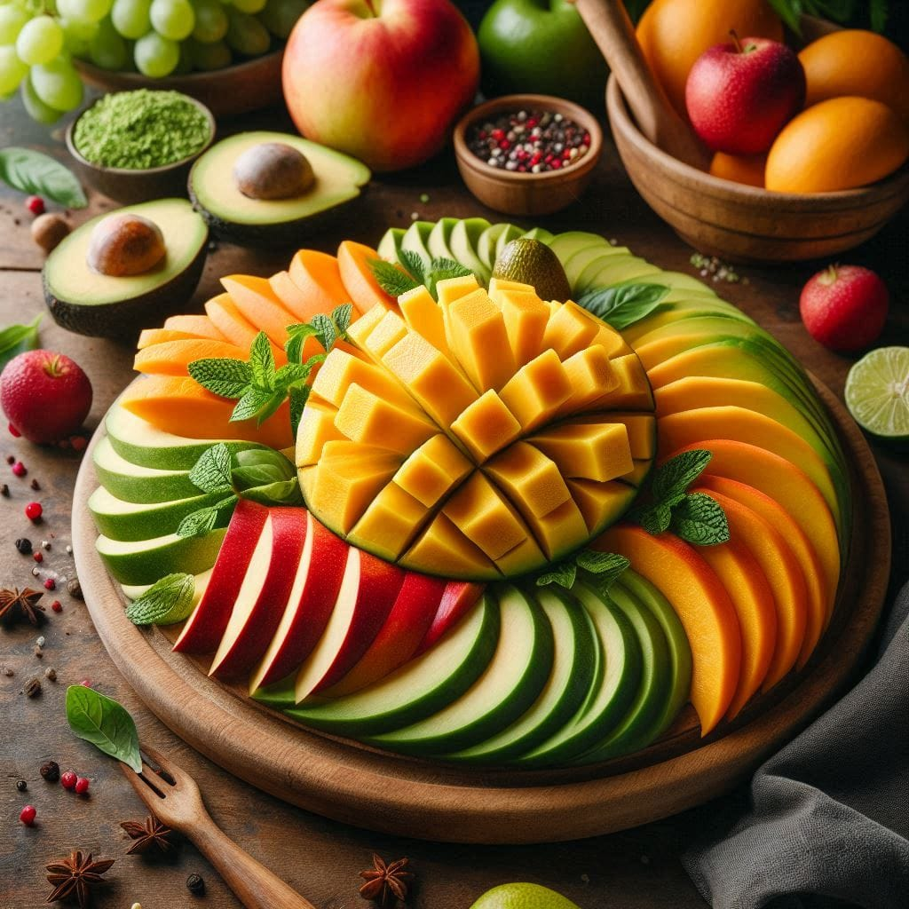

Mango-Avokado Salata
Malzemeler
- 1 olgun avokado
- 1 mango
- Yarım kırmızı soğan
- Bir avuç roka
- Zeytinyağı, limon, tuz
Hazırlanışı
- Avokado ve mangoyu küp doğrayın.
- Soğanı ince doğrayın, roka ile karıştırın.
- Zeytinyağı, limon ve tuz ekleyin, karıştırıp servis edin.